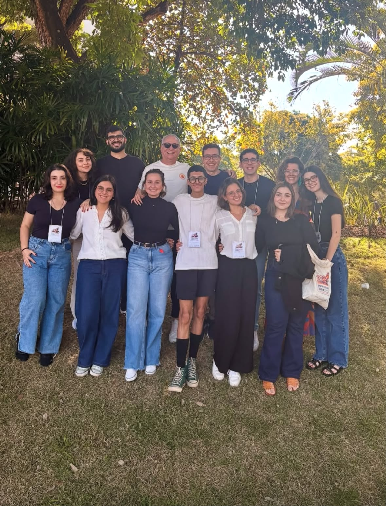
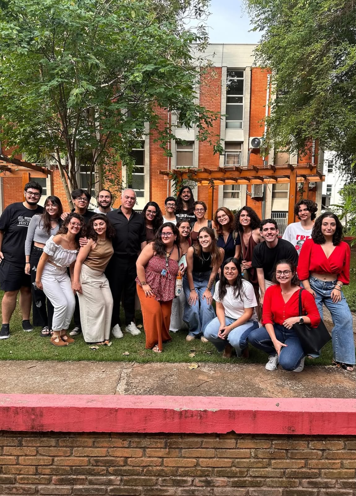

01 · Nossa história
Duas décadas pensando as Américas a partir da Unicamp
Um grupo de pesquisa dedicado à história da América Latina sediado no Instituto de Filosofia e Ciências Humanas da Universidade Estadual de Campinas desde 2006.
O Centro de Estudos Americanos da Unicamp nasceu em 2006, no âmbito do Instituto de Filosofia e Ciências Humanas (IFCH), com o propósito de reunir pesquisadores dedicados a pensar as Américas para além das fronteiras nacionais.
Ao longo dos anos, o CEAMP consolidou-se como um espaço de debate interdisciplinar sobre a história do continente, do período colonial aos processos de independência, das construções nacionais do século XIX aos movimentos sociais, políticos e culturais dos séculos XX e XXI.
O grupo articula pesquisas de doutorado, mestrado e iniciação científica, e mantém intercâmbio permanente com pesquisadores de outras universidades brasileiras e do exterior. As atividades incluem seminários, publicações, orientações, cursos abertos e a organização de acervos documentais que hoje compõem este repositório.
Nossa missão é dupla: produzir conhecimento novo sobre a história das Américas e preservar, de forma acessível, o que já foi produzido dentro do grupo.


Marcos
Uma trajetória de pesquisa
CCriação da área de História da América na Unicamp, sob a liderança do professor Héctor Hernán Bruit Cabrera.
Ingresso do professor Leandro Karnal na Unicamp e início das primeiras reuniões entre docentes e orientandos.
Formação do Grupo de Estudos em História da América, reunindo pesquisadores liderados pelos professores Héctor Bruit, Leandro Karnal, José Alves de Freitas Neto e seus orientandos.
Consolidação do CEAMP como centro de pesquisa dedicado aos estudos americanistas, reunindo mais de 30 pesquisadores entre graduandos, pós-graduandos e egressos.